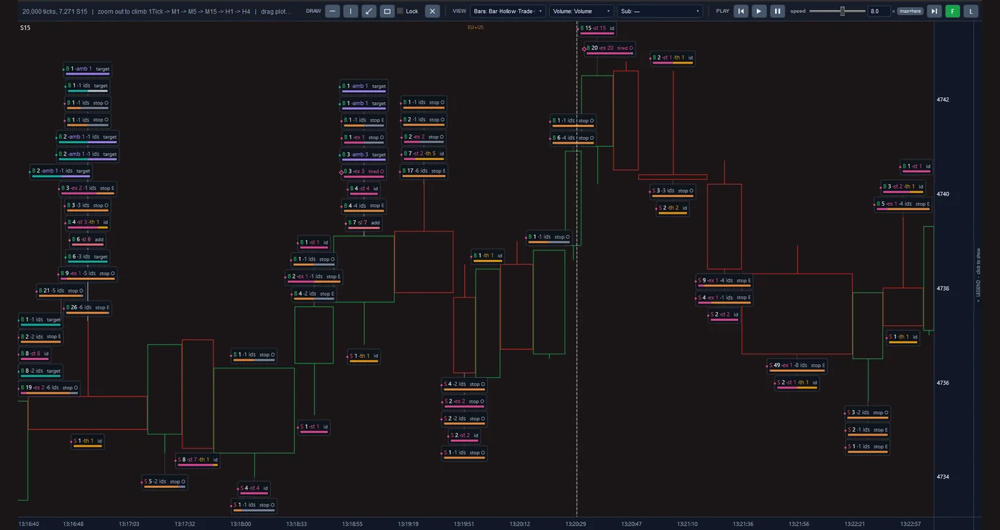
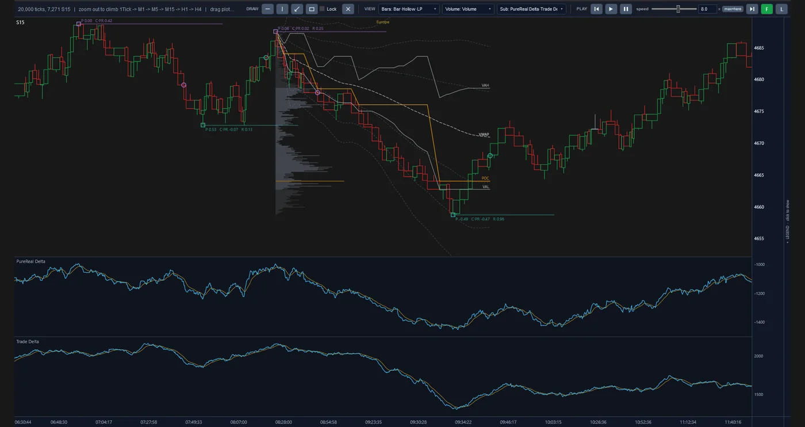
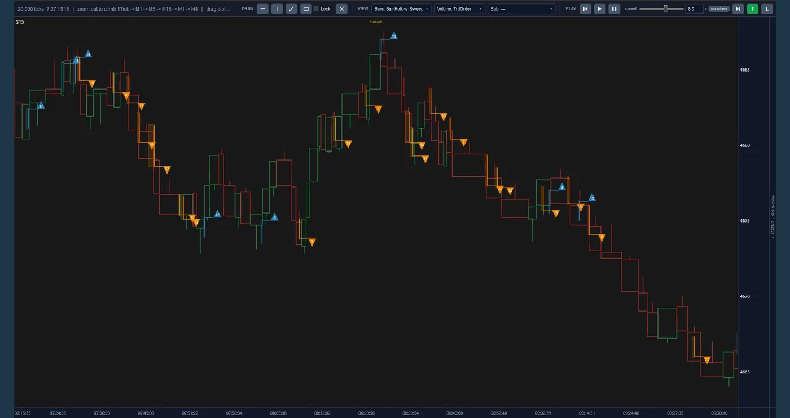

Introduction
Price does not move by itself. A move usually begins where a trader is not willing to wait and accepts the best available price with a market order. Many of these moves die down within moments and only some carry on. Short-term trading, known as scalping, means going along with exactly those moves: a fast entry, a small target and an early exit. The difficulty lies in telling which move has real force behind it and which will turn back before it reaches the target.
We have handed that judgement to an algorithm that learned it from the market's own flow of orders.
The Fast Scalp project has gathered several years of the Chicago exchange, one of the world's largest futures markets, at the level of every single order. From that data, with machine learning (ML) and statistical analysis, we have arrived at a short-term trading algorithm that is tested inside a close reconstruction of the exchange itself. The destination is an automated trading desk that runs capital with this algorithm, not with people's reactions of the moment.
Simulator reports
This project has one full report from the execution simulator per market. Each report shows the algorithm at five levels of order latency to the exchange at once, from zero to 100 milliseconds. You can download both and read and weigh them independently of us.
-
GC Gold futures
- Dec 2019 to Jul 2026test period
- 1,696trading days
- 25,228simulated trades in the base scenario
- 5 scenarios5 latency levels, from zero to 100 ms
One self-contained HTML file, 2.3 MB, Persian and English
-
NQ Nasdaq-100 futures
- May 2017 to Jun 2026test period
- 2,342trading days
- 194,302simulated trades in the base scenario
- 5 scenarios5 latency levels, from zero to 100 ms
One self-contained HTML file, 2.4 MB, Persian and English
These are simulation results on recorded market data (a backtest), not real trading, and no guarantee of the future.
Inside the platform
These are real screens from the project's platform, not mock-ups. Each view shows the same order-by-order market data from a different angle. Click the image to enlarge it.



Fifteen-second bars, and on each bar the labels of its events: the buy or sell side (B / S), the size, and marks such as stop and target.
Fifteen-second bars with a volume profile, the VWAP line and the POC, VAH and VAL levels, and beneath them the PureReal Delta and Trade Delta panels.
The same bars in the Sweep view: blue and orange triangles, each with its number, on the bar where they occurred.
Approach
The algorithm learns from market data and is measured inside a reconstruction of that same market. The work was done in three stages:
-
From raw data to the full picture of the market
The trading screen shows only a summary of the market. We process every message the exchange recorded and rebuild the list of waiting orders for each moment. The result is a picture of what happened on both sides of the market before each price move.
-
From the picture of the market to the algorithm
In machine learning the computer learns patterns from real examples instead of following hand-written rules. That way, and backed by statistical analysis, our algorithm has learned in which situations a short move carries on and in which it turns back. Its output is three decisions: when to enter, where to put the trade's stop, and when to exit.
-
From the algorithm to tested execution
A market order does not wait in a queue and fills as soon as it reaches the exchange, but getting there takes time. In that interval the best price may be gone, and the trade may fill at a worse price than the one seen when the decision was made. Our simulator rebuilds exactly that, and the yardstick is the net financial result after every cost.
What stands out
-
Knowledge that lives in the system, not in people's heads.
Short-term trading traditionally leans on the trader's eye and reactions, and fatigue and emotion act directly on the result. Our algorithm learned what it knows from market data and applies it the same way on every trade. That knowledge is recorded, repeatable and can be retrained.
-
Selection, not trade after trade.
In short-term trading the profit on each trade is small, and its cost, the fee and the gap between the buying and selling price, is paid on every trade. So trading every move ends in a loss; we measured unselective entry at real cost and it lost money. That is exactly where the algorithm's value lies: telling which move is worth entering and which to let pass.
-
A result that still holds in execution.
Many short-term strategies are profitable on paper and not in practice, because their test assumes an order fills at the quoted price. In our simulator an order arrives late and fills from the volume available at that very moment. The simulation's correctness has been checked against an independent reconstruction from the exchange's raw data.
-
Defined risk, realistically estimated.
Every trade has a set stop from the moment of entry, and its life is short. That stop is not a hard ceiling: in sharp moves the exit may happen at a worse price. The simulator sees that case too, and what is reported is the real loss, not the nominal one.
-
Telling a real finding from chance.
Learning models can memorise the past without having learned anything about the future. To avoid that, the algorithm is measured on periods it did not see in training, turbulent ones included. Each finding is also set beside data deliberately stripped of any meaningful pattern, and if it shows up there too it is discarded.
-
Knowing the infrastructure need before paying for it.
In short-term trading the speed at which an order reaches the exchange and the fee on each trade decide the line between profit and loss, and improving either is expensive. We test the algorithm across a range of those conditions at once. So before any financial commitment it is clear under which conditions the plan is justified.
The road ahead
-
Done
The data infrastructure, the market reconstruction, the trading algorithm, the execution simulator and the reporting system are built.
-
Now
Today we are measuring the algorithm in a multi-year test, under varied speed and fee conditions and on more than one market.
-
Next
After that come the connection to live data, deployment close to the exchange, and a trial period with limited capital.
-
Final step
The final step is trading with real capital, as an automated desk.
Technology
The learning models are built in Python and trained on a graphics processor. The market-reconstruction engine and the execution simulator are written in C#, and the raw-data reader in Rust. The result of each test is presented in a standard, bilingual report, and a change is accepted only after it has been compared with the previous version and has passed the automated tests.